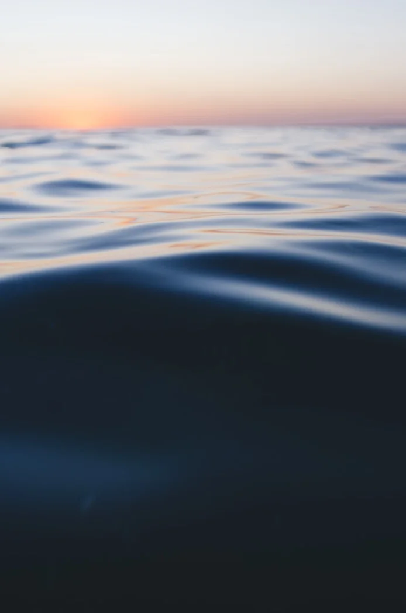
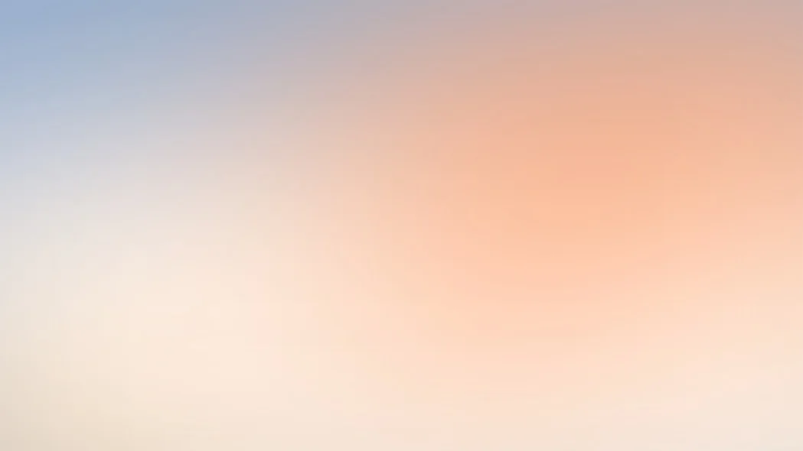
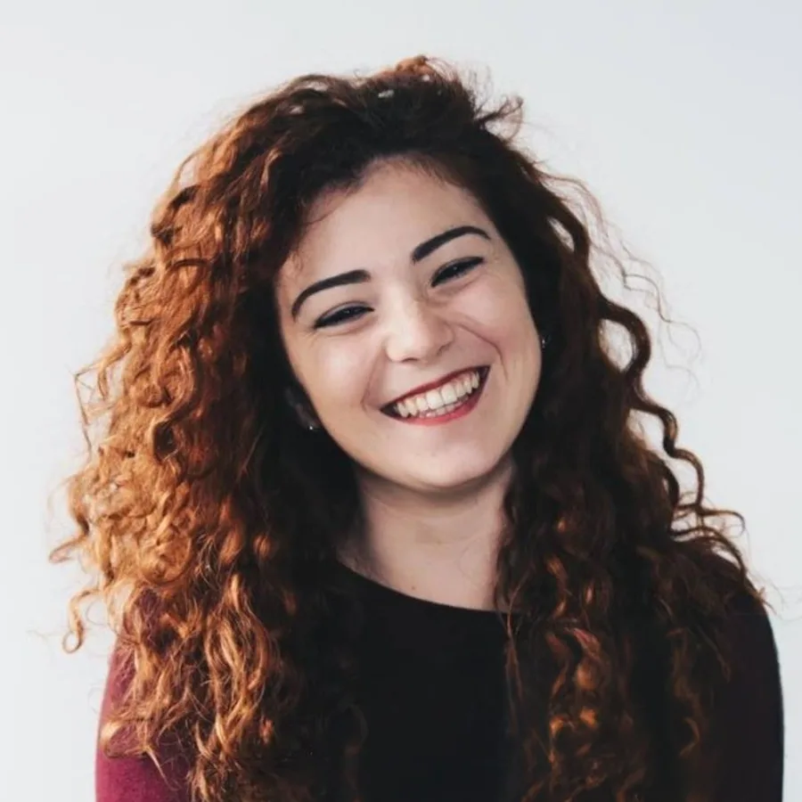

<!doctype html>
<html lang="en">
<head>
<meta charset="UTF-8">
<meta name="viewport" content="width=device-width, initial-scale=1.0">
<title>Giovanna Arcieri — Portfolio</title>
<link rel="icon" href="assets/favicon.png">
<style>
@font-face{font-family:"NATS";src:url("assets/NATS.woff2") format("woff2"),local("NATS");font-weight:400;font-style:normal;font-display:block}
@layer base{*,::before,::after{box-sizing:border-box;margin:0;padding:0}h1,h2,p{font:inherit}img{display:block;max-width:100%}a{text-decoration:none;color:inherit}button{font:inherit;color:inherit;text-transform:inherit;background:none;border:0;text-align:inherit}ul{list-style:none}}


@layer base {
  :root {
    color: #000;
    background: #fff;
    font-family: "NATS","Arial Narrow",Arial,sans-serif;
    font-synthesis: none;
  }

  html {
    scroll-behavior: smooth;
  }

  body {
    min-width: 320px;
    min-height: 100dvh;
  }

  button,
  a {
    color: inherit;
  }

  button {
    cursor: pointer;
  }

  ::selection {
    color: #fff;
    background: #6c35ff;
  }
}

@keyframes page-in {
  from {
    opacity: 0;
    transform: translateY(10px);
  }
  to {
    opacity: 1;
    transform: translateY(0);
  }
}

@keyframes card-in {
  from {
    opacity: 0;
    transform: translateY(22px);
  }
  to {
    opacity: 1;
    transform: translateY(0);
  }
}

.page-enter {
  animation: page-in 500ms cubic-bezier(0.2, 0.7, 0, 1) both;
}

.site-nav {
  position: relative;
  z-index: 10;
  display: flex;
  height: 62px;
  align-items: flex-start;
  justify-content: space-between;
  padding: 20px 20px 30px;
  background: #fff;
  font-size: 16px;
  line-height: 1;
  text-transform: uppercase;
}

.site-nav--dark {
  color: #fff;
  background: #000;
}

.wordmark {
  white-space: nowrap;
  text-transform: uppercase;
}

.nav-links {
  display: flex;
  gap: 20px;
  align-items: center;
}

.nav-links button,
.nav-links a,
.wordmark {
  position: relative;
}

.nav-links button::after,
.nav-links a::after,
.wordmark::after {
  position: absolute;
  right: 0;
  bottom: -3px;
  left: 0;
  height: 1px;
  content: "";
  background: currentColor;
  transform: scaleX(0);
  transform-origin: right;
  transition: transform 220ms ease;
}

.nav-links button:hover::after,
.nav-links a:hover::after,
.wordmark:hover::after,
.nav-links button:focus-visible::after,
.nav-links a:focus-visible::after,
.wordmark:focus-visible::after {
  transform: scaleX(1);
  transform-origin: left;
}

.home {
  min-height: 100dvh;
  color: #fff;
  background: #000;
}

.home-hero {
  position: relative;
  display: grid;
  min-height: 600px;
  place-items: center;
  overflow: hidden;
}

.home-hero h1 {
  position: relative;
  z-index: 2;
  font-size: clamp(36px, 4vw, 52px);
  line-height: 0.95;
  letter-spacing: -0.02em;
  text-align: center;
  text-transform: uppercase;
  mix-blend-mode: difference;
}

.home-hero > p {
  position: absolute;
  z-index: 2;
  bottom: 34px;
  left: 50%;
  font-size: 14px;
  text-transform: uppercase;
  transform: translateX(-50%);
}

.hero-light {
  position: absolute;
  top: 14px;
  right: 0;
  width: min(41vw, 525px);
  height: 498px;
  object-fit: cover;
  transition: transform 900ms cubic-bezier(0.2, 0.7, 0, 1);
}

.hero-water {
  position: absolute;
  bottom: 0;
  left: 0;
  width: min(23vw, 229px);
  height: 280px;
  overflow: hidden;
}

.hero-water::after {
  position: absolute;
  inset: 0;
  content: "";
  background: linear-gradient(to top, #000 5%, #000 28%, transparent 65%);
}

.hero-water img {
  width: 100%;
  height: 160%;
  object-fit: cover;
}

.home-hero:hover .hero-light {
  transform: scale(1.025);
}

.project-grid {
  display: grid;
  grid-template-columns: repeat(5, minmax(0, 1fr));
  gap: 20px;
  padding: 94px 0 130px;
}

.project-card {
  min-width: 0;
  text-align: left;
  animation: card-in 600ms cubic-bezier(0.2, 0.7, 0, 1) var(--delay) both;
}

.project-image {
  position: relative;
  display: block;
  aspect-ratio: 1;
  overflow: hidden;
  background: #111;
}

.project-image img {
  width: 100%;
  height: 100%;
  object-fit: cover;
  transition:
    transform 650ms cubic-bezier(0.2, 0.7, 0, 1),
    filter 350ms ease;
}

.project-index {
  position: absolute;
  top: 12px;
  right: 12px;
  opacity: 0;
  font-size: 13px;
  transition: opacity 220ms ease;
}

.project-card:hover img,
.project-card:focus-visible img {
  filter: brightness(0.72);
  transform: scale(1.045);
}

.project-card:hover .project-index,
.project-card:focus-visible .project-index {
  opacity: 1;
}

.project-name {
  display: block;
  margin-top: 7px;
  font-size: 22px;
  line-height: 0.95;
  letter-spacing: -0.44px;
  text-transform: uppercase;
}

.project-arrow {
  display: block;
  overflow: hidden;
  height: 0;
  opacity: 0;
  font-size: 13px;
  text-transform: uppercase;
  transition:
    height 250ms ease,
    opacity 250ms ease,
    margin 250ms ease;
}

.project-card:hover .project-arrow,
.project-card:focus-visible .project-arrow {
  height: 16px;
  margin-top: 7px;
  opacity: 1;
}

.case-study {
  min-height: 100dvh;
  padding: 0 20px 20px;
  background: #fff;
}

.case-study .site-nav {
  margin: 0 -20px;
}

.case-title {
  display: flex;
  min-height: 500px;
  flex-direction: column;
  align-items: center;
  justify-content: center;
}

.case-title > p {
  margin-bottom: 10px;
  color: #747474;
  font-size: 12px;
  letter-spacing: 0.06em;
  text-transform: uppercase;
}

.case-title h1 {
  font-size: 24px;
  line-height: 0.95;
  letter-spacing: -0.48px;
  text-align: center;
}

.story {
  display: grid;
  min-height: 633px;
  grid-template-columns: minmax(0, 1fr) minmax(0, 1fr);
  gap: 50px;
  align-items: start;
  padding: 45px 0;
}

.story-image {
  min-width: 0;
  height: 543px;
  overflow: hidden;
}

.story-image img {
  width: 100%;
  height: 100%;
  object-fit: cover;
}

.story-image.contain img,
.story-image.device-stage img {
  object-fit: contain;
}

.story-image.tall {
  height: 680px;
}

.dark-stage {
  padding: clamp(22px, 5vw, 75px);
  background: #050505;
}

.device-stage {
  position: relative;
  overflow: visible;
}

.story-copy {
  display: flex;
  height: 543px;
  flex-direction: column;
  justify-content: space-between;
}

.image-right .story-image {
  grid-column: 2;
}

.image-right .story-copy {
  grid-row: 1;
  grid-column: 1;
}

.story-label {
  font-size: 16px;
  line-height: 0.85;
  letter-spacing: -0.32px;
  text-transform: uppercase;
}

.story-number {
  margin-bottom: 2px;
  font-size: 18px;
  line-height: 1.15;
  letter-spacing: -0.36px;
}

.body-copy {
  max-width: 640px;
  font-family: "NATS","Arial Narrow",Arial,sans-serif;
  font-size: 12px;
  font-variation-settings: "wdth" 100;
  font-weight: 400;
  line-height: 16px;
  letter-spacing: 0.4px;
}

.story--wide {
  display: flex;
  min-height: auto;
  flex-direction: column;
  gap: 50px;
  padding: 80px 0;
}

.story--wide .story-image {
  width: 100%;
  height: min(62vw, 690px);
}

.story--wide .story-image img {
  object-fit: cover;
}

.story--wide .story-image.contain img {
  object-fit: contain;
}

.story--wide .story-copy {
  display: grid;
  width: 100%;
  height: auto;
  grid-template-columns: 1fr auto;
}

.story--wide .story-copy > div {
  grid-row: 1;
  grid-column: 1;
}

.story--wide .story-label {
  grid-column: 2;
}

.journey {
  padding: 90px 0 120px;
}

.journey > .story-label {
  margin-bottom: 40px;
}

.journey-grid {
  display: grid;
  grid-template-columns: repeat(5, minmax(0, 1fr));
  gap: 19px;
  align-items: center;
}

.journey-grid article {
  text-align: center;
}

.journey-grid article:nth-child(2) {
  transform: translateY(60px);
}

.journey-grid article:nth-child(3) {
  transform: translateY(90px);
}

.journey-grid article:nth-child(4) {
  transform: translateY(115px);
}

.journey-grid article:nth-child(5) {
  transform: translateY(30px);
}

.journey-grid img {
  width: 100%;
  aspect-ratio: 0.62;
  border-radius: 20px;
  box-shadow: 0 4px 14px rgb(0 0 0 / 14%);
  object-fit: cover;
}

.journey-grid h2 {
  margin-top: 19px;
  font-size: 18px;
  line-height: 1.15;
  letter-spacing: -0.36px;
  text-transform: uppercase;
}

.journey-grid p {
  font-family: "NATS","Arial Narrow",Arial,sans-serif;
  font-size: 12px;
  font-variation-settings: "wdth" 100;
  line-height: 16px;
  letter-spacing: 0.4px;
}

.device-details {
  position: relative;
  display: grid;
  max-width: 720px;
  min-height: 250px;
  grid-template-columns: repeat(8, 1fr);
  align-items: center;
  margin: -520px 0 260px auto;
  pointer-events: none;
  opacity: 0.88;
}

.device-details img {
  width: 100%;
  max-height: 170px;
  object-fit: contain;
}

.device-details img:nth-last-child(2) {
  grid-column: 1 / 3;
}

.device-details img:last-child {
  grid-column: 3 / 5;
}

.project-pagination {
  display: flex;
  flex-wrap: wrap;
  gap: 10px 24px;
  justify-content: center;
  padding: 60px 0 90px;
  text-transform: uppercase;
}

.project-pagination button {
  color: #888;
  font-size: 16px;
}

.project-pagination button.active,
.project-pagination button:hover {
  color: #000;
  text-decoration: underline;
  text-underline-offset: 4px;
}

.site-footer {
  display: flex;
  min-height: 200px;
  flex-direction: column;
  justify-content: space-between;
  padding: 30px 40px;
  color: #fff;
  background: #000;
  font-size: 16px;
  line-height: 1;
  text-transform: uppercase;
}

.home .site-footer {
  margin-top: 0;
}

.site-footer > div {
  display: grid;
  grid-template-columns: 1fr 1fr 1fr;
  align-items: start;
}

.site-footer > div > :nth-child(2) {
  text-align: center;
}

.site-footer > div > :last-child {
  text-align: right;
}

.email-address {
  text-transform: lowercase;
}

.about-panel {
  position: fixed;
  z-index: 50;
  inset: 0;
  visibility: hidden;
  transition: visibility 500ms;
}

.about-panel.is-open {
  visibility: visible;
}

.about-backdrop {
  position: absolute;
  inset: 0;
  width: 100%;
  background: rgb(0 0 0 / 55%);
  opacity: 0;
  transition: opacity 400ms ease;
}

.about-panel.is-open .about-backdrop {
  opacity: 1;
}

.about-panel aside {
  position: absolute;
  top: 0;
  right: 0;
  display: flex;
  width: min(650px, 92vw);
  height: 100%;
  flex-direction: column;
  justify-content: center;
  padding: clamp(30px, 7vw, 90px);
  color: #fff;
  background: #6c35ff;
  transform: translateX(100%);
  transition: transform 500ms cubic-bezier(0.2, 0.7, 0, 1);
}

.about-panel.is-open aside {
  transform: translateX(0);
}

.close-button {
  position: absolute;
  top: 24px;
  right: 24px;
  font-size: 16px;
  text-transform: uppercase;
}

.eyebrow {
  margin-bottom: 32px;
  font-size: 16px;
  text-transform: uppercase;
}

.about-panel h2 {
  max-width: 470px;
  font-size: clamp(38px, 5.4vw, 72px);
  line-height: 0.9;
  letter-spacing: -0.035em;
  text-transform: uppercase;
}

.about-copy {
  max-width: 470px;
  margin: 40px 0;
  font-family: "NATS","Arial Narrow",Arial,sans-serif;
  font-size: 14px;
  font-variation-settings: "wdth" 100;
  line-height: 1.5;
}

.about-panel aside > a {
  align-self: flex-start;
  border-bottom: 1px solid currentColor;
  font-size: 18px;
  text-transform: uppercase;
}

@media (max-width: 900px) {
  .project-grid {
    grid-template-columns: repeat(2, minmax(0, 1fr));
    padding-top: 60px;
  }

  .project-card:last-child {
    grid-column: 1 / -1;
    width: calc(50% - 10px);
  }

  .story {
    min-height: 0;
    grid-template-columns: 1fr;
    gap: 28px;
    padding: 60px 0;
  }

  .story-image,
  .story-image.tall {
    height: min(78vw, 620px);
    grid-row: 1;
    grid-column: 1;
  }

  .story-copy,
  .image-right .story-copy {
    display: grid;
    height: auto;
    grid-row: 2;
    grid-column: 1;
    grid-template-columns: 1fr 2fr;
    gap: 30px;
  }

  .story-copy > div {
    grid-column: 2;
  }

  .story--wide .story-copy {
    grid-template-columns: 1fr 2fr;
  }

  .journey-grid {
    grid-template-columns: repeat(2, minmax(0, 1fr));
  }

  .journey-grid article {
    transform: none !important;
  }

  .journey-grid article:last-child {
    grid-column: 1 / -1;
    width: calc(50% - 10px);
  }

  .device-details {
    display: none;
  }
}

@media (max-width: 600px) {
  .site-nav {
    height: auto;
    padding: 18px 16px;
    font-size: 14px;
  }

  .nav-links {
    gap: 10px;
  }

  .home-hero {
    min-height: 580px;
  }

  .home-hero h1 {
    max-width: 280px;
  }

  .hero-light {
    top: 65px;
    width: 64vw;
    height: 330px;
  }

  .hero-water {
    width: 42vw;
    height: 220px;
  }

  .home-hero > p {
    width: 100%;
    text-align: center;
  }

  .project-grid {
    grid-template-columns: 1fr;
    gap: 48px;
    padding: 70px 16px 100px;
  }

  .project-card:last-child {
    grid-column: auto;
    width: 100%;
  }

  .project-name {
    font-size: 24px;
  }

  .case-study {
    padding: 0 16px 16px;
  }

  .case-study .site-nav {
    margin: 0 -16px;
  }

  .case-title {
    min-height: 380px;
  }

  .case-title h1 {
    max-width: 290px;
  }

  .story {
    gap: 22px;
    padding: 42px 0;
  }

  .story-image,
  .story-image.tall {
    height: 88vw;
  }

  .story-copy,
  .image-right .story-copy,
  .story--wide .story-copy {
    display: flex;
    flex-direction: column;
    gap: 70px;
  }

  .dark-stage {
    padding: 24px;
  }

  .story--wide .story-image {
    height: 88vw;
  }

  .journey-grid {
    grid-template-columns: 1fr;
    gap: 50px;
  }

  .journey-grid article:last-child {
    grid-column: auto;
    width: 100%;
  }

  .journey-grid img {
    aspect-ratio: 0.85;
  }

  .site-footer {
    min-height: 240px;
    padding: 24px 16px;
    font-size: 14px;
  }

  .site-footer > div {
    grid-template-columns: 1fr 1fr;
    gap: 18px;
  }

  .site-footer > div > :nth-child(2) {
    text-align: right;
  }

  .site-footer > div > :last-child {
    grid-column: 1 / -1;
    text-align: left;
  }
}

@media (prefers-reduced-motion: reduce) {
  *,
  *::before,
  *::after {
    scroll-behavior: auto !important;
    animation-duration: 1ms !important;
    animation-iteration-count: 1 !important;
    transition-duration: 1ms !important;
  }
}

/* ── additions: reveal, hover, about ── */
:root{--ease:cubic-bezier(.22,1,.36,1)}
.reveal{opacity:0;translate:0 48px;filter:saturate(.5);transition:opacity 1.1s var(--ease),translate 1.1s var(--ease),filter 1.3s var(--ease)}
.reveal.from-left{translate:-60px 0}.reveal.from-right{translate:60px 0}
.reveal.visible{opacity:1;translate:0 0;filter:saturate(1)}
.d1{transition-delay:.15s}.d2{transition-delay:.3s}.d3{transition-delay:.45s}.d4{transition-delay:.6s}.d5{transition-delay:.75s}
@keyframes in-r{from{opacity:0;translate:60px 0;filter:saturate(.5)}}
@keyframes in-l{from{opacity:0;translate:-60px 0;filter:saturate(.5)}}
.hero-light{animation:in-r 1.3s var(--ease) .1s both}.hero-water{animation:in-l 1.3s var(--ease) .3s both}
.body-copy,.journey-grid p,.about-copy{font-family:"NATS","Arial Narrow",Arial,sans-serif;font-size:18px;line-height:115%;letter-spacing:-.36px;font-variation-settings:normal}
.project-card{display:block}
.project-pagination a{color:#888;font-size:16px}.project-pagination a.active,.project-pagination a:hover{color:#000;text-decoration:underline;text-underline-offset:4px}
.story-image img{transition:transform .8s var(--ease)}.story-image:not(.device-stage):hover img{transform:scale(1.04)}
.journey-grid img{transition:transform .6s var(--ease)}.journey-grid article:hover img{transform:scale(1.04)}
.no-scroll{overflow:hidden}
.project-card.reveal{animation:none}
.project-arrow{line-height:18px;white-space:nowrap;height:18px;margin-top:10px;transition:opacity 250ms ease}
.project-card:hover .project-arrow,.project-card:focus-visible .project-arrow{height:18px;margin-top:10px}
@media(min-width:601px){.project-grid{padding-inline:20px}}
.about-panel aside{justify-content:flex-start;overflow-y:auto;padding-top:clamp(70px,9vw,110px)}
.about-copy{max-width:470px;margin:32px 0 0}
.ab-h{font-size:16px;text-transform:uppercase;margin:48px 0 18px;padding-bottom:12px;border-bottom:.5px solid rgb(255 255 255/45%)}
.ab-tools li{display:flex;justify-content:space-between;align-items:center;gap:20px;margin-bottom:10px;font-size:18px;line-height:115%;letter-spacing:-.36px}
.dots{display:flex;gap:6px}.dots i{width:7px;height:7px;border-radius:50%;border:.5px solid #fff}.dots i.on{background:#fff}
.ab-item{margin-bottom:20px;font-size:18px;line-height:115%;letter-spacing:-.36px}.ab-item span{display:block;opacity:.7}

.contact-page .case-title{min-height:0;height:auto;display:block;text-align:left;padding:150px 20px 48px}.contact-page .case-title *{text-align:left;margin-left:0;margin-right:0}.contact-page .case-title h1{font-size:clamp(48px,9vw,140px);line-height:95%;letter-spacing:-.05em;margin-top:18px}
.contact-page main{padding:0 20px 120px;max-width:1100px}
.contact-page{position:relative}
.contact-page main.contact-grid{display:block;max-width:1100px}
.contact-photo{position:absolute;top:84px;right:20px;width:min(30vw,400px);overflow:hidden}.contact-photo img{width:100%;aspect-ratio:1;object-fit:cover;transition:transform .8s var(--ease)}.contact-photo:hover img{transform:scale(1.04)}
@media(max-width:800px){.contact-photo{position:static;max-width:420px;width:100%;margin:0 0 40px}.contact-page main.contact-grid{display:flex;flex-direction:column}.contact-photo{order:-1}}
.contact-lead{font-size:clamp(28px,4vw,56px);line-height:105%;letter-spacing:-.04em;max-width:760px;margin:0 0 72px}
.contact-list{border-top:.5px solid #000}
.contact-list a{display:flex;justify-content:space-between;align-items:baseline;gap:20px;padding:22px 0;border-bottom:.5px solid #000;font-size:clamp(20px,2.4vw,32px);letter-spacing:-.03em;transition:padding .5s var(--ease),opacity .3s}
.contact-list a span{font-size:16px;opacity:.6;letter-spacing:-.32px}
.contact-list a:hover{padding-left:16px}
.home{color:#000;background:#fff}
.home-hero h1{color:#fff}
.hero-water::after{background:linear-gradient(to top,#000 5%,#000 18%,transparent 55%)}
.home-hero h1{font-size:clamp(28px,3.4vw,44px)}
.hero-light{width:min(42.3vw,525px)}
.hero-water img{margin-top:-25px;object-position:15% 0}
.about-panel aside{background:#000}
.hero-static .hero-light,.hero-static .hero-water,.hero-static .page-enter{animation:none!important}
.no-anim,.no-anim *{animation:none!important;transition:none!important}
.site-footer a{text-transform:none}
.foot-r{margin-top:-8px}.foot-r button{padding:8px 4px;cursor:pointer}.foot-r button{text-transform:uppercase;opacity:.5;transition:opacity .3s}.foot-r button.on,.foot-r button:hover{opacity:1}.foot-r button.on{text-decoration:underline;text-underline-offset:4px}.foot-r i{font-style:normal;opacity:.5}
.work{padding:0 20px 40px}
.work-head{display:flex;justify-content:space-between;align-items:flex-end;padding:90px 0 14px;border-bottom:.5px solid #000;margin-bottom:64px}
.work-head h2{font-size:clamp(48px,6vw,88px);line-height:1;letter-spacing:-.04em;text-transform:uppercase}
.work-head span{font-size:11px;letter-spacing:.12em;opacity:.6}
.work-row{display:grid;grid-template-columns:2fr 1fr;gap:26px;margin-bottom:110px}
.work-row.flip{grid-template-columns:1fr 2fr}.work-row.flip .work-img{order:2}
.work-img{position:relative;display:block;overflow:hidden;aspect-ratio:16/10}
.work-col .work-img{aspect-ratio:4/3}
.work-img img{width:100%;height:100%;object-fit:cover;transition:transform .8s var(--ease)}
.work-row:hover .work-img img,.work-col:hover .work-img img{transform:scale(1.04)}
.work-img b{position:absolute;top:12px;left:12px;background:#000;color:#fff;font-weight:400;font-size:11px;padding:7px 10px;letter-spacing:.1em;line-height:1}
.work-info{display:flex;flex-direction:column}
.work-info small,.work-meta small{display:block;font-size:10px;letter-spacing:.14em;text-transform:uppercase;opacity:.6;margin-bottom:14px}
.work-info h3,.work-meta h3{font-weight:400;font-size:clamp(28px,3vw,44px);line-height:1.05;letter-spacing:-.03em;text-transform:uppercase;margin-bottom:26px}
.work-meta h3{font-size:clamp(22px,2.2vw,30px);margin-bottom:18px}
.work-info p,.work-meta p{font-size:18px;line-height:115%;letter-spacing:-.36px;max-width:520px}
.tags{display:flex;flex-wrap:wrap;gap:8px;margin-top:24px}
.tags i{font-style:normal;border:1px solid #000;padding:7px 10px;font-size:10px;letter-spacing:.12em;text-transform:uppercase;line-height:1}
.work-view{white-space:nowrap;margin-top:auto;padding-top:40px;display:flex;align-items:center;gap:10px;font-size:12px;letter-spacing:.14em;text-transform:uppercase}
.work-view em{font-style:normal;display:inline-block;transition:transform .4s var(--ease)}
.work-row:hover .work-view em,.work-col:hover .work-view em{transform:translate(4px,-4px)}
.work-duo{display:grid;grid-template-columns:1fr 1fr;gap:40px;align-items:start}
.work-duo .work-col:nth-child(2){margin-top:clamp(40px,6vw,90px)}
.work-col{display:block}
.work-meta{display:block;border-top:.5px solid #000;margin-top:24px;padding-top:14px}
.work-foot{display:flex;justify-content:space-between;align-items:center;gap:16px;margin-top:26px}
.work-foot .tags{margin-top:0}.work-foot .work-view{margin-top:0;padding-top:0}
@media(max-width:800px){.work-foot{flex-direction:column;align-items:flex-start}.work-row,.work-row.flip,.work-duo{grid-template-columns:1fr}.work-row.flip .work-img{order:0}.work-row{margin-bottom:64px;gap:20px}.work-duo .work-col:nth-child(2){margin-top:48px}.work-duo{gap:48px}.work-view{padding-top:24px}}
.site-footer{min-height:110px;justify-content:center}
.contact-meta{margin-top:56px;font-size:18px;line-height:115%;letter-spacing:-.36px}
.contact-meta span{display:block;opacity:.6}
.about-panel aside>a{margin-top:56px;padding-bottom:2px}
</style>
</head>
<body>
<div id="app"></div>
<script>
const D={"projects": [{"key": "bulgari", "label": "Bulgari", "title": "BVLGARI", "cover": "assets/home/3f70b.webp"}, {"key": "lavazza", "label": "Lavazza", "title": "LAVAZZA", "cover": "assets/home/376b9.webp"}, {"key": "turismo", "label": "Turismo", "title": "TOURISM DIGITAL HUB", "cover": "assets/home/b77bd.webp"}, {"key": "agid", "label": "AgID", "title": "NUOVA ESPERIENZA DEL CITTADINO.", "cover": "assets/home/c3349.webp"}, {"key": "digitalizzazione", "label": "Digitalizzazione", "title": "DIGITALIZZAZIONE DEL PAESE", "cover": "assets/home/95656.webp"}], "stories": {"bulgari": [{"number": "01", "label": "Narrative", "copy": "Intro", "image": "assets/bulgari/811ed.webp", "imageAlt": "Bulgari digital experience overview", "layout": "image-right", "imageClass": "dark-stage"}, {"number": "01", "label": "Home page", "copy": "The modular structure allows the site to be adapted to any type of requirement and to be easily updated according to the changing needs throughout the entire communication plan period.", "image": "assets/bulgari/7dc14.webp", "imageAlt": "Bulgari homepage concepts", "layout": "image-left", "imageClass": "dark-stage contain"}, {"number": "02", "label": "Product page", "copy": "The page is designed primarily for mobile devices and is aimed at enhancing the product to bring the online experience closer to that of shopping in a boutique.", "image": "assets/bulgari/7add1.webp", "imageAlt": "Bulgari mobile product page", "layout": "image-right", "imageClass": "dark-stage contain"}, {"number": "03", "label": "High Jewellery", "copy": "Drawing from the timeless beauty of Rome, the High Jewellery is a tribute to Bvlgari's vocation to perpetual reinvention.", "image": "assets/bulgari/fd147.webp", "imageAlt": "Bulgari high jewellery editorial", "layout": "wide"}, {"number": "04", "label": "Product Listing Page", "copy": "The design is easily adaptable to the different needs of the various product categories. The versatility of the design allows for a mix of product, worn and lifestyle content.", "image": "assets/bulgari/ae6c8.webp", "imageAlt": "Bulgari product listing", "layout": "image-left", "imageClass": "dark-stage contain"}, {"number": "05", "label": "Product Listing Page", "image": "assets/bulgari/25fb9.webp", "imageAlt": "Bulgari mobile product listing", "layout": "image-right", "imageClass": "dark-stage contain"}, {"number": "06", "label": "History", "copy": "A dynamic and immersive timeline to accompany the user in discovering the Bvlgari history.", "image": "assets/bulgari/4a963.webp", "imageAlt": "Bulgari history timeline", "layout": "wide"}, {"number": "07", "label": "Red Dot 2024 · iF Design Award 2026", "image": "assets/bulgari/ba363.webp", "imageAlt": "Bulgari interface gallery", "layout": "wide"}], "lavazza": [{"number": "01", "label": "Narrative", "copy": "Progettazione dell’e-commerce Lavazza con l’obiettivo di migliorare il conversion rate attraverso un’esperienza più immersiva, guidata dallo storytelling e fortemente integrata con le logiche di prodotto e brand.", "image": "assets/lavazza/dcae3.webp", "imageAlt": "Lavazza ecommerce experience", "layout": "wide"}, {"number": "02", "label": "Home page", "copy": "L’homepage è focalizzata sul lancio della macchinetta Voicy, costruendo un’esperienza narrativa attorno al concept “welcome to the future”. La pagina guida l’utente alla scoperta del prodotto fino all’acquisto, combinando coinvolgimento e performance in un unico flusso continuo.", "image": "assets/lavazza/b42f4.webp", "imageAlt": "Lavazza Voicy homepage", "layout": "image-right", "imageClass": "device-stage"}, {"number": "03", "label": "Power Brands", "copy": "Valorizzazione dei Power Brands, definendo un sistema di componenti flessibile che permette al template “Collection” di adattarsi ai diversi prodotti di punta e alle campagne, mantenendo coerenza visiva e continuità di esperienza grazie al Design System.", "image": "assets/lavazza/588b5.webp", "imageAlt": "Lavazza power brands mobile screens", "layout": "image-left", "imageClass": "contain tall"}, {"number": "04", "label": "Product page", "copy": "L’utente può esplorare le caratteristiche del prodotto, personalizzare varianti e formati, accedere a contenuti aggiuntivi come la sostenibilità e attivare percorsi di conversione come abbonamenti e cross/up-selling tramite prodotti correlati.", "image": "assets/lavazza/edb0d.webp", "imageAlt": "Lavazza product page screens", "layout": "wide", "imageClass": "contain"}], "turismo": [{"number": "01", "label": "Narrative", "copy": "Piattaforma data-driven e omnichannel per la promozione e prenotazione delle destinazioni turistiche italiane, con l’obiettivo di migliorare la connessione tra domanda e offerta e innovare l’esperienza turistica.", "image": "assets/turismo/8d9bd.webp", "imageAlt": "Tourism Digital Hub across devices", "layout": "wide", "imageClass": "contain"}, {"number": "02", "label": "Home page", "copy": "Definizione del concept e della progettazione dei visual, contribuendo a un’esperienza strutturata su un approccio full-funnel e su contenuti personalizzati lungo tutto il percorso utente.", "image": "assets/turismo/070f4.webp", "imageAlt": "Tourism Digital Hub homepage", "layout": "image-left", "imageClass": "contain"}], "agid": [{"number": "01", "label": "Narrative", "copy": "Ho contribuito alla progettazione di una piattaforma di citizen experience per il catalogo servizi della Pubblica Amministrazione, rivolta a cittadini in mobilità internazionale, con l’obiettivo di semplificare l’accesso ai servizi pubblici e migliorare la comprensione dei percorsi amministrativi.", "image": "assets/agid/484a5.webp", "imageAlt": "Citizen experience platform across devices", "layout": "wide", "imageClass": "contain"}, {"number": "02", "label": "Struttura", "copy": "Il progetto è stato strutturato come un ecosistema digitale centrato sui “life moments”, in cui l’utente viene guidato attraverso contenuti e servizi personalizzati lungo il proprio journey, riducendo la complessità dell’interazione con la PA.", "image": "assets/agid/f0b0a.webp", "imageAlt": "Citizen experience life moments interface", "layout": "image-left"}, {"number": "03", "label": "Design System e accessibilità", "copy": "Mi sono occupata del concept UX, della progettazione di interfacce e prototipi, definendo pattern chiave come chatbot accessibile, contenuti dinamici e informazioni di servizio. Ho inoltre contribuito alla definizione di un Design System basato su Atomic Design e accessibilità, in conformità agli standard WCAG 2.2.", "image": "assets/agid/63582.webp", "imageAlt": "AGID design system documentation", "layout": "image-right", "imageClass": "contain"}], "digitalizzazione": [{"number": "01", "label": "Narrative", "copy": "Nell’ambito del progetto di trasformazione digitale e dematerializzazione dei processi della Pubblica Amministrazione, ho lavorato sulla progettazione di portali interni, sulla Brand Identity e sulla realizzazione del Design System nel rispetto dei requisiti di accessibilità.", "image": "assets/digitalizzazione/95656.webp", "imageAlt": "Abstract purple digital landscape", "layout": "image-left"}, {"number": "02", "label": "Design System e accessibilità", "copy": "Durante il processo, ho collaborato strettamente con team multidisciplinari, tra cui sviluppatori, esperti di usabilità e stakeholder interni, contribuendo al successo del progetto nel raggiungere gli obiettivi di trasformazione digitale della PA.", "image": "assets/digitalizzazione/e41cc.webp", "imageAlt": "Collaborative design workshop", "layout": "image-right"}]}, "journey": [{"title": "Awareness", "copy": "Attrazione attraverso touchpoint digitali mediante digital e content marketing.", "image": "assets/turismo/d4e9a.webp"}, {"title": "Engagement", "copy": "Coinvolgimento attraverso contenuti e informazioni personalizzate e rilevanti.", "image": "assets/turismo/3be18.webp"}, {"title": "Conversion", "copy": "Trasformazione dell’interesse in azioni concrete sulla piattaforma.", "image": "assets/turismo/abbce.webp"}, {"title": "Retention", "copy": "Fidelizzazione attraverso la costruzione di una relazione continuativa.", "image": "assets/turismo/8b94c.webp"}, {"title": "Advocacy", "copy": "Trasformazione di ogni turista in ambasciatore dell’esperienza turistica.", "image": "assets/turismo/4a9e8.webp"}], "devices": ["assets/lavazza/44513.svg", "assets/lavazza/ac9c2.svg", "assets/lavazza/4c6e1.svg", "assets/lavazza/2c37e.svg", "assets/lavazza/6f1d0.svg", "assets/lavazza/99b6a.svg", "assets/lavazza/672f0.svg", "assets/lavazza/b88fa.svg", "assets/lavazza/bc38b.svg", "assets/lavazza/03bca.svg", "assets/lavazza/cd97f.svg", "assets/lavazza/491f5.webp", "assets/lavazza/5a6b6.webp", "assets/lavazza/a288f.webp", "assets/lavazza/8959c.webp"]};
const TR={"it": {"The modular structure allows the site to be adapted to any type of requirement and to be easily updated according to the changing needs throughout the entire communication plan period.": "La struttura modulare permette al sito di adattarsi a qualsiasi esigenza e di essere aggiornato facilmente in base ai bisogni che cambiano lungo tutto il periodo del piano di comunicazione.", "The page is designed primarily for mobile devices and is aimed at enhancing the product to bring the online experience closer to that of shopping in a boutique.": "La pagina è pensata prima di tutto per i dispositivi mobile e punta a valorizzare il prodotto, avvicinando l’esperienza online a quella di acquisto in boutique.", "Drawing from the timeless beauty of Rome, the High Jewellery is a tribute to Bvlgari's vocation to perpetual reinvention.": "Ispirata alla bellezza senza tempo di Roma, l’Alta Gioielleria è un omaggio alla vocazione di Bvlgari alla perpetua reinvenzione.", "The design is easily adaptable to the different needs of the various product categories. The versatility of the design allows for a mix of product, worn and lifestyle content.": "Il design si adatta facilmente alle esigenze delle diverse categorie di prodotto. La versatilità del layout permette di mixare contenuti di prodotto, indossati e lifestyle.", "A dynamic and immersive timeline to accompany the user in discovering the Bvlgari history.": "Una timeline dinamica e immersiva che accompagna l’utente alla scoperta della storia di Bvlgari.", "Narrative": "Narrativa", "Product page": "Pagina prodotto", "High Jewellery": "Alta Gioielleria", "Product Listing Page": "Pagina elenco prodotti", "History": "Storia", "Full-funnel experience": "Esperienza full-funnel", "Selected project": "Progetto", "Intro": "Intro"}, "en": {"Progettazione dell’e-commerce Lavazza con l’obiettivo di migliorare il conversion rate attraverso un’esperienza più immersiva, guidata dallo storytelling e fortemente integrata con le logiche di prodotto e brand.": "Design of the Lavazza e-commerce, aimed at improving the conversion rate through a more immersive experience, driven by storytelling and tightly integrated with product and brand logic.", "L’homepage è focalizzata sul lancio della macchinetta Voicy, costruendo un’esperienza narrativa attorno al concept “welcome to the future”. La pagina guida l’utente alla scoperta del prodotto fino all’acquisto, combinando coinvolgimento e performance in un unico flusso continuo.": "The homepage focuses on the launch of the Voicy machine, building a narrative experience around the “welcome to the future” concept. The page guides the user from discovering the product to purchase, combining engagement and performance in one continuous flow.", "Valorizzazione dei Power Brands, definendo un sistema di componenti flessibile che permette al template “Collection” di adattarsi ai diversi prodotti di punta e alle campagne, mantenendo coerenza visiva e continuità di esperienza grazie al Design System.": "Showcasing the Power Brands by defining a flexible component system that lets the “Collection” template adapt to the different flagship products and campaigns, keeping visual consistency and continuity of experience thanks to the Design System.", "L’utente può esplorare le caratteristiche del prodotto, personalizzare varianti e formati, accedere a contenuti aggiuntivi come la sostenibilità e attivare percorsi di conversione come abbonamenti e cross/up-selling tramite prodotti correlati.": "Users can explore product features, customise variants and sizes, access additional content such as sustainability, and activate conversion paths such as subscriptions and cross/up-selling through related products.", "Piattaforma data-driven e omnichannel per la promozione e prenotazione delle destinazioni turistiche italiane, con l’obiettivo di migliorare la connessione tra domanda e offerta e innovare l’esperienza turistica.": "A data-driven, omnichannel platform for promoting and booking Italian tourist destinations, aimed at improving the connection between demand and supply and innovating the tourism experience.", "Definizione del concept e della progettazione dei visual, contribuendo a un’esperienza strutturata su un approccio full-funnel e su contenuti personalizzati lungo tutto il percorso utente.": "Definition of the concept and design of the visuals, contributing to an experience built on a full-funnel approach and personalised content along the whole user journey.", "Ho contribuito alla progettazione di una piattaforma di citizen experience per il catalogo servizi della Pubblica Amministrazione, rivolta a cittadini in mobilità internazionale, con l’obiettivo di semplificare l’accesso ai servizi pubblici e migliorare la comprensione dei percorsi amministrativi.": "I contributed to the design of a citizen experience platform for the Public Administration service catalogue, aimed at citizens moving internationally, with the goal of simplifying access to public services and improving understanding of administrative procedures.", "Il progetto è stato strutturato come un ecosistema digitale centrato sui “life moments”, in cui l’utente viene guidato attraverso contenuti e servizi personalizzati lungo il proprio journey, riducendo la complessità dell’interazione con la PA.": "The project was structured as a digital ecosystem centred on “life moments”, where users are guided through personalised content and services along their journey, reducing the complexity of interacting with the Public Administration.", "Mi sono occupata del concept UX, della progettazione di interfacce e prototipi, definendo pattern chiave come chatbot accessibile, contenuti dinamici e informazioni di servizio. Ho inoltre contribuito alla definizione di un Design System basato su Atomic Design e accessibilità, in conformità agli standard WCAG 2.2.": "I worked on the UX concept and on the design of interfaces and prototypes, defining key patterns such as an accessible chatbot, dynamic content and service information. I also contributed to defining a Design System based on Atomic Design and accessibility, in compliance with WCAG 2.2 standards.", "Nell’ambito del progetto di trasformazione digitale e dematerializzazione dei processi della Pubblica Amministrazione, ho lavorato sulla progettazione di portali interni, sulla Brand Identity e sulla realizzazione del Design System nel rispetto dei requisiti di accessibilità.": "As part of the digital transformation and dematerialisation of Public Administration processes, I worked on the design of internal portals, on the Brand Identity and on building the Design System in compliance with accessibility requirements.", "Durante il processo, ho collaborato strettamente con team multidisciplinari, tra cui sviluppatori, esperti di usabilità e stakeholder interni, contribuendo al successo del progetto nel raggiungere gli obiettivi di trasformazione digitale della PA.": "Throughout the process I worked closely with multidisciplinary teams, including developers, usability experts and internal stakeholders, contributing to the project’s success in reaching the digital transformation goals of the Public Administration.", "Attrazione attraverso touchpoint digitali mediante digital e content marketing.": "Attracting people through digital touchpoints, digital and content marketing.", "Coinvolgimento attraverso contenuti e informazioni personalizzate e rilevanti.": "Engaging people with personalised, relevant content and information.", "Trasformazione dell’interesse in azioni concrete sulla piattaforma.": "Turning interest into concrete actions on the platform.", "Fidelizzazione attraverso la costruzione di una relazione continuativa.": "Building loyalty through an ongoing relationship.", "Trasformazione di ogni turista in ambasciatore dell’esperienza turistica.": "Turning every tourist into an ambassador of the tourism experience.", "Struttura": "Structure", "Design System e accessibilità": "Design System and accessibility", "NUOVA ESPERIENZA DEL CITTADINO.": "A NEW CITIZEN EXPERIENCE.", "DIGITALIZZAZIONE DEL PAESE": "DIGITALISING THE COUNTRY", "Digitalizzazione": "Digitalisation", "Turismo": "Tourism", "Risolutore": "Problem Solver", "Cerco i problemi e le soluzioni più adatte.": "I look for problems and the most suitable solutions.", "Empatia": "Empathy", "Riesco a percepire le emozioni delle persone intorno a me, calandomi nelle vite o situazioni degli altri.": "I can sense the emotions of the people around me, putting myself in their lives and situations.", "Positività": "Positivity", "Attenzione! Entusiasmo contagioso.": "Watch out! Contagious enthusiasm.", "Individuazione": "Individualisation", "Capacità di scoprire in che modo persone diverse possano lavorare insieme in modo produttivo.": "The ability to find out how different people can work together productively.", "Liceo artistico “G. De Nittis” — Bari": "Art high school “G. De Nittis” — Bari"}},U={"it": {"work": "Work", "about": "Chi sono", "contact": "Contatti", "role": "UX / UI Designer · Roma", "view": "Vedi progetto ↗", "open": "Apri il progetto", "close": "Chiudi", "aboutEy": "Chi sono", "aboutTitle": "Progetto esperienze digitali con chiarezza e intenzione.", "bio1": "Senior UI/UX &amp; Visual Designer con oltre 8 anni di esperienza tra design strategico, esperienza utente e sistemi visivi scalabili.", "bio2": "Ho progettato e-commerce, piattaforme di servizi pubblici e design system per Bvlgari, Lavazza e la Pubblica Amministrazione italiana (AGID, MITUR, MEF), lavorando con Agile SCRUM, Atomic Design e standard WCAG.", "tools": "Strumenti", "skills": "Competenze — Gallup", "edu": "Formazione", "lets": "Scrivimi ↗", "cTag": "Contatti", "cTitle": "Scriviamoci", "cLead": "Hai un progetto in mente o vuoi semplicemente salutarmi? Scrivimi, rispondo volentieri.", "cEmail": "Email ↗", "cProfile": "Profilo ↗", "cBased": "Sede", "cPlace": "Roma, Italia", "cAvail": "Disponibile per", "cAvailV": "Progetti UX / UI, design system, consulenze", "city": "Roma", "nav": "Navigazione principale", "others": "Altri progetti", "bio3": "Dal 2025 lavoro in DXC, dove mi occupo di prodotti per la Pubblica Amministrazione e di accessibilità.", "how": "Come lavoro", "exp": "Esperienze", "exps": [["2025 — oggi", "DXC — UI/UX Lead, Visual Designer & Accessibility expert"], ["2017 — 2025", "Accenture — Senior UI/UX, Visual Designer & Accessibility expert"]], "hows": [["Architettura e ricerca", "Parto dalla struttura: riorganizzo l’architettura dei siti per rendere la navigazione chiara e la scoperta dei prodotti più naturale."], ["Concept e interfacce", "Dal concept ai visual, fino a schermate e prototipi: costruisco esperienze guidate dallo storytelling e pensate per convertire."], ["Design System e accessibilità", "Progetto sistemi basati su Atomic Design e standard WCAG, per garantire coerenza visiva, scalabilità e accessibilità."], ["Collaborazione", "Lavoro in Agile SCRUM con sviluppatori, esperti di usabilità e stakeholder, supporto il front-end e la Quality Assurance e seguo il lavoro dei designer junior."]]}, "en": {"work": "Work", "about": "About", "contact": "Contact", "role": "UX / UI Designer · Rome", "view": "View project ↗", "open": "Open project", "close": "Close", "aboutEy": "About", "aboutTitle": "Designing digital experiences with clarity and purpose.", "bio1": "Senior UI/UX &amp; Visual Designer with over 8 years of experience across strategic design, user experience and scalable visual systems.", "bio2": "I have designed e-commerce, public service platforms and design systems for Bvlgari, Lavazza and the Italian Public Administration (AGID, MITUR, MEF), working with Agile SCRUM, Atomic Design and WCAG standards.", "tools": "Tools", "skills": "Skills — Gallup", "edu": "Education", "lets": "Get in touch ↗", "cTag": "Contact", "cTitle": "Get in touch", "cLead": "Have a project in mind, or just want to say hi? Write to me, I’d love to hear from you.", "cEmail": "Email ↗", "cProfile": "Profile ↗", "cBased": "Based in", "cPlace": "Rome, Italy", "cAvail": "Available for", "cAvailV": "UX / UI projects, design systems, consulting", "city": "Rome", "nav": "Main navigation", "others": "Other projects", "bio3": "Since 2025 I have been working at DXC, on Public Administration products and accessibility.", "how": "How I work", "exp": "Experience", "exps": [["2025 — today", "DXC — UI/UX Lead, Visual Designer & Accessibility expert"], ["2017 — 2025", "Accenture — Senior UI/UX, Visual Designer & Accessibility expert"]], "hows": [["Architecture and research", "I start from structure: I reorganise site architecture to make navigation clear and product discovery more natural."], ["Concept and interfaces", "From concept to visuals, screens and prototypes: I build experiences driven by storytelling and designed to convert."], ["Design System and accessibility", "I design systems based on Atomic Design and WCAG standards, to ensure visual consistency, scalability and accessibility."], ["Collaboration", "I work in Agile SCRUM with developers, usability experts and stakeholders, support front-end and Quality Assurance, and guide junior designers’ work."]]}};
let L='en';try{L=localStorage.getItem('lang')||((navigator.language||'').toLowerCase().startsWith('it')?'it':'en')}catch(_){L=(navigator.language||'').toLowerCase().startsWith('it')?'it':'en'}
const u=k=>U[L][k],T=t=>t==null?t:((TR[L]||{})[t]||t);
const MAIL='giovanna.arcieri@gmail.com',app=document.getElementById('app');
const esc=s=>s.replace(/[&<>"]/g,c=>({'&':'&amp;','<':'&lt;','>':'&gt;','"':'&quot;'}[c]));
const nav=d=>`<nav class="site-nav ${d?'site-nav--dark':''}" aria-label="${u('nav')}"><a class="wordmark" href="#/">Giovanna Arcieri</a><div class="nav-links"><a href="#/" data-work>${u('work')}</a><button data-about>${u('about')}</button><a href="#/contact">${u('contact')}</a></div></nav>`;
const foot=()=>`<footer class="site-footer" id="contact"><div class="reveal"><a href="https://www.linkedin.com/in/giovanna-arcieri-865abb83/" target="_blank" rel="noreferrer">LinkedIn</a><a class="email-address" href="mailto:${MAIL}">${MAIL}</a><span class="foot-r"><button data-lang="it" class="${L==='it'?'on':''}">IT</button> / <button data-lang="en" class="${L==='en'?'on':''}">EN</button></span></div></footer>`;
const TAGS={bulgari:['Home page','Product page','High Jewellery'],lavazza:['Home page','Power Brands','Product page'],turismo:['Home page'],agid:['Struttura','Design System e accessibilità'],digitalizzazione:['Design System e accessibilità']};
const descOf=k=>{const x=D.stories[k].find(s=>s.copy&&s.copy.length>30);return x?x.copy:''};
const workInfo=(p,i,k)=>`<small>0${i+1} / 0${D.projects.length} · ${esc(T(p.label))}</small><h3>${esc(T(p.title))}</h3><p>${esc(T(descOf(p.key)))}</p>`;
const tagsOf=p=>`<span class="tags">${TAGS[p.key].map(t=>`<i>${esc(T(t))}</i>`).join('')}</span>`;
const view=()=>`<span class="work-view">${u('view').replace(' ↗','')} <em>↗</em></span>`;
const work=()=>{const P=D.projects,n=P.length,ar=(p,i)=>`aria-label="${u('open')} ${esc(T(p.label))}"`;
const row=(p,i)=>{const flip=i%2===1,imgCls=flip?'from-right':'from-left',infoCls=flip?'from-left':'from-right';
return `<a class="work-row ${flip?'flip':''}" href="#/project/${p.key}" ${ar(p,i)}><span class="work-img reveal ${imgCls}"><b>0${i+1}</b></span><span class="work-info reveal ${infoCls} d1">${workInfo(p,i)}${tagsOf(p)}${view()}</span></a>`};
const col=(p,i)=>`<a class="work-col reveal d${i-1}" href="#/project/${p.key}" ${ar(p,i)}><span class="work-img"><b>0${i+1}</b></span><span class="work-meta">${workInfo(p,i)}<span class="work-foot">${tagsOf(p)}${view()}</span></span></a>`;
return `<main id="projects" class="work"><div class="work-head reveal"><h2>${u('work')}</h2><span>01 – 0${n}</span></div>${P.slice(0,3).map(row).join('')}<div class="work-duo">${P.slice(3).map((p,j)=>col(p,j+3)).join('')}</div></main>`};
const home=()=>`<div class="home page-enter">${nav(false)}<header class="home-hero"><div class="hero-water"></div><h1>Giovanna Arcieri</h1></header>${work()}${foot()}</div>`;
const story=s=>{const w=s.layout==='wide',l=s.layout||'image-right',a=w?'':l==='image-left'?'from-left':'from-right',b=w?'':l==='image-left'?'from-right':'from-left';
return `<section class="story ${l} ${w?'story--wide':''}"><div class="story-image reveal ${a} ${s.imageClass||''}"></div><div class="story-copy reveal ${b} d1"><p class="story-label">${esc(T(s.label))}</p><div><p class="story-number">${s.number}</p>${s.copy?`<p class="body-copy">${esc(T(s.copy))}</p>`:''}</div></div></section>`};
const journey=`<section class="journey"><p class="story-label reveal">${T('Full-funnel experience')}</p><div class="journey-grid">${D.journey.map((c,i)=>`<article class="reveal d${i+1}"><h2>${c.title}</h2><p>${esc(T(c.copy))}</p></article>`).join('')}</div></section>`;
const proj=k=>{const m=D.projects.find(p=>p.key===k);return `<div class="case-study page-enter">${nav(false)}<header class="case-title reveal"><h1>${T(m.title)}</h1></header><main>${D.stories[k].map(story).join('')}${k==='turismo'?journey:''}</main><nav class="project-pagination reveal" aria-label="${u('others')}">${D.projects.map(p=>`<a href="#/project/${p.key}" class="${p.key===k?'active':''}">${T(p.label)}</a>`).join('')}</nav>${foot()}</div>`};
const contact=()=>`<div class="case-study contact-page page-enter">${nav(false)}<header class="case-title reveal"><p>${u('cTag')}</p><h1>${u('cTitle')}</h1></header><main class="contact-grid"><div class="contact-text"><p class="contact-lead reveal d1">${u('cLead')}</p><div class="contact-list reveal d2"><a href="mailto:${MAIL}">${MAIL}<span>${u('cEmail')}</span></a><a href="https://www.linkedin.com/in/giovanna-arcieri-865abb83/" target="_blank" rel="noreferrer">LinkedIn<span>${u('cProfile')}</span></a></div><p class="contact-meta reveal d3"><span>${u('cBased')}</span>${u('cPlace')}<br><br><span>${u('cAvail')}</span>${u('cAvailV')}</p></div><figure class="contact-photo reveal from-right d2"></figure></main>${foot()}</div>`;
const tools=[['Sketch',5],['Figma',4],['Adobe XD',3],['Axure RP',2],['Zeplin',5],['InVision Studio',4],['Adobe Illustrator',5],['Photoshop',5],['Premiere',3]];
const gallup=[['Risolutore','Cerco i problemi e le soluzioni più adatte.'],['Empatia','Riesco a percepire le emozioni delle persone intorno a me, calandomi nelle vite o situazioni degli altri.'],['Positività','Attenzione! Entusiasmo contagioso.'],['Individuazione','Capacità di scoprire in che modo persone diverse possano lavorare insieme in modo produttivo.']];
const edu=[['2023','WCAG 2.2 — Check web accessibility'],['2022','WCAG 2.1 — Check web accessibility'],['2021','Launch & Code — AWS'],['2013','Rainbow Academy — Rome'],['2012','Liceo artistico “G. De Nittis” — Bari']];
const about=document.createElement('div');about.className='about-panel';about.setAttribute('aria-hidden','true');
const renderAbout=()=>{about.innerHTML=`<button class="about-backdrop" aria-label="${u('close')}" data-close></button><aside role="dialog" aria-modal="true" aria-labelledby="about-title"><button class="close-button" data-close aria-label="${u('close')}">${u('close')}</button><p class="eyebrow">${u('aboutEy')}</p><h2 id="about-title">${u('aboutTitle')}</h2><p class="about-copy">${u('bio1')}<br><br>${u('bio2')}<br><br>${u('bio3')}</p><h3 class="ab-h">${u('exp')}</h3>${u('exps').map(([y,t])=>`<p class="ab-item"><span>(${y})</span>${t}</p>`).join('')}<h3 class="ab-h">${u('how')}</h3>${u('hows').map(([n,t])=>`<p class="ab-item">${n}<span>${t}</span></p>`).join('')}<h3 class="ab-h">${u('edu')}</h3>${edu.map(([y,t])=>`<p class="ab-item"><span>(${y})</span>${T(t)}</p>`).join('')}<a href="mailto:${MAIL}">${u('lets')}</a></aside>`};renderAbout();
document.body.append(about);
const setAbout=o=>{about.classList.toggle('is-open',o);about.setAttribute('aria-hidden',!o);document.body.classList.toggle('no-scroll',o)};
document.addEventListener('click',e=>{if(e.target.closest('[data-about]'))setAbout(true);else if(e.target.closest('[data-close]'))setAbout(false)});
addEventListener('keydown',e=>e.key==='Escape'&&setAbout(false));
const bar=document.createElement('div');bar.className='progress';bar.setAttribute('aria-hidden','true');bar.innerHTML='<i></i>';document.body.append(bar);
let pt=0;const prog=()=>{pt=0;const m=document.documentElement.scrollHeight-innerHeight;bar.firstChild.style.transform=`scaleX(${m>0?Math.min(1,Math.max(0,scrollY/m)):0})`};
const qprog=()=>{if(!pt)pt=requestAnimationFrame(prog)};addEventListener('scroll',qprog,{passive:true});addEventListener('resize',qprog);
function observe(){const els=[...document.querySelectorAll('.reveal')];if(!('IntersectionObserver'in window)){els.forEach(e=>e.classList.add('visible'));return}
const io=new IntersectionObserver(en=>en.forEach(x=>{if(x.isIntersecting){x.target.classList.add('visible');io.unobserve(x.target)}}),{threshold:.12,rootMargin:'0px'});els.forEach(e=>io.observe(e))}
addEventListener('scroll',()=>{if(innerHeight+scrollY>=document.documentElement.scrollHeight-6)document.querySelectorAll('.reveal:not(.visible)').forEach(e=>e.classList.add('visible'))},{passive:true});
function goWork(){const r=document.documentElement,onHome=!!document.querySelector('.home');try{history.replaceState(null,'','#/')}catch(_){}
const top=()=>{const t=document.getElementById('projects');return t?Math.max(0,t.getBoundingClientRect().top+scrollY):0};
if(onHome){scrollTo({top:top(),behavior:'smooth'});return}
show(null,true);r.style.scrollBehavior='auto';const go=()=>scrollTo({top:top(),behavior:'instant'});go();requestAnimationFrame(()=>{go();requestAnimationFrame(()=>{go();setTimeout(()=>{go();r.style.scrollBehavior=''},400)})})}
function show(k,keep){if(!keep)document.body.classList.remove('hero-static');const r=document.documentElement;r.style.scrollBehavior='auto';scrollTo(0,0);app.innerHTML=k==='contact'?contact():k?proj(k):home();document.title=k==='contact'?u('contact')+' — Giovanna Arcieri':k?`${T(D.projects.find(p=>p.key===k).label)} — Giovanna Arcieri`:'Giovanna Arcieri — Portfolio';setAbout(false);scrollTo(0,0);observe();qprog();if(!keep)requestAnimationFrame(()=>requestAnimationFrame(()=>{r.style.scrollBehavior=''}))}
function fromHash(){if(/^#\/contact/.test(location.hash||''))return'contact';const m=(location.hash||'').match(/^#\/project\/(\w+)/);return m&&D.projects.some(p=>p.key===m[1])?m[1]:null}
document.addEventListener('click',e=>{const a=e.target.closest('a[href^="#/"]');if(!a)return;e.preventDefault();if(a.hasAttribute('data-work')){goWork();return}const h=a.getAttribute('href'),m=h.match(/^#\/project\/(\w+)/);try{history.replaceState(null,'',h)}catch(_){}show(h==='#/contact'?'contact':m?m[1]:null)});
document.addEventListener('click',e=>{const b=e.target.closest('[data-lang]');if(!b)return;const n=b.dataset.lang;if(n===L)return;L=n;try{localStorage.setItem('lang',L)}catch(_){}document.documentElement.lang=L;const y=scrollY,r=document.documentElement,open=about.classList.contains('is-open');document.body.classList.add('no-anim','hero-static');r.style.scrollBehavior='auto';renderAbout();show(fromHash(),true);setAbout(open);document.querySelectorAll('.reveal').forEach(x=>x.classList.add('visible'));scrollTo(0,y);requestAnimationFrame(()=>requestAnimationFrame(()=>{scrollTo(0,y);r.style.scrollBehavior='';document.body.classList.remove('no-anim')}))});
addEventListener('hashchange',()=>show(fromHash()));
document.documentElement.lang=L;show(fromHash());prog();setTimeout(prog,600);
</script>
</body>
</html>
